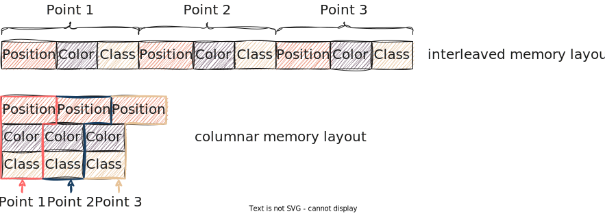

The built-in point buffer types
pasture provides several built-in point buffer types that you can use in your application. These types are:
In this section you will learn about the capabilities of these three buffer types and when to use which. The code examples of this section can be found in the basic point buffers example in the pasture repository.
VectorBuffer - A sensible default
VectorBuffer is a point buffer that stores point data in a contiguous memory region using the Rust Vec type. We saw this buffer type in some of the previous examples. Just as Vec is the go-to data structure for most things in Rust, VectorBuffer is a sensible default for working with point cloud data. It closely resembles the type of data management that you might write yourself (think back to Vec<Point> in the data model section) if you want something that 'just works'.
Here is how you can create a VectorBuffer for a custom point type:
/// This point type uses the #[derive(PointType)] macro to auto-generate an appropriate PointLayout #[repr(C, packed)] #[derive(Copy, Clone, PointType, Debug, bytemuck::NoUninit, bytemuck::AnyBitPattern)] struct SimplePoint { #[pasture(BUILTIN_POSITION_3D)] pub position: Vector3<f64>, #[pasture(BUILTIN_INTENSITY)] pub intensity: u16, } fn main() { // Create some points let points = vec![ SimplePoint { position: Vector3::new(1.0, 2.0, 3.0), intensity: 42, }, SimplePoint { position: Vector3::new(-1.0, -2.0, -3.0), intensity: 84, }, ]; // A VectorBuffer can be created from a PointLayout let mut buffer = VectorBuffer::new_from_layout(SimplePoint::layout()); // We can push individual points through a (mutable) PointView: buffer.view_mut().push_point(points[0]); buffer.view_mut().push_point(points[1]); // A more elegant solution is to collect the data from an iterator: buffer = points.iter().copied().collect::<VectorBuffer>(); }
Recall that a pasture point buffer is always a combination of one or more memory regions with a PointLayout. The new_from_layout function is the way to default-construct most of the point buffer types in pasture. It is actually provided through a special trait called MakeBufferFromLayout.
Since all point buffers require a PointLayout, we can't use the Default trait to default-construct point buffers. PointLayout does implement Default, but the resulting PointLayout contains no point attributes. A point buffer with such a layout will never be able to hold any data, as the size of an empty PointLayout is zero! For this reason, pasture does not implement Default for the built-in point buffer types.
Since a VectorBuffer stores points contiguously in memory, there are a couple of ways to access the point data, which correspond to what you would expect from a Vec<Point>:
// Iterate by value: for point in buffer.view::<SimplePoint>() { println!("{:?}", point); } // Iterate by ref: for point_ref in buffer.view::<SimplePoint>().iter() { println!("{:?}", point_ref); } // Iterate by mutable ref: for point_mut in buffer.view_mut::<SimplePoint>().iter_mut() { point_mut.intensity *= 2; }
All access to strongly typed point data requires the creation of a PointView structure, which is done by calling view::<T> on the buffer. For all buffer types, the PointView structure always supports accessing point data by value, so in line 2 the type of point is SimplePoint. The VectorBuffer is a buffer with interleaved memory layout (which is explained in-depth in the section on memory layouts). This means that all data for a single point is stored contiguously in memory (just as it would in a Vec<SimplePoint>), which allows accessing point data through borrows as shown in line 7. The type of point_ref is thus &SimplePoint. For mutable access, we have to use a second view type called PointViewMut which is created by calling view_mut::<T> on the buffer. The type of point_mut in line 12 is thus &mut SimplePoint.
Note that the point view types also provide methods to access points by index, such as at and set_at.
The Rust language is limited when it comes to writing types that are generic over mutability, which is why there are two different point view types in pasture: One for immutable access and one for mutable access.
Besides accessing point data through a PointView, we can also access individual attribute values through attribute views:
for position in buffer.view_attribute::<Vector3<f64>>(&POSITION_3D) { println!("{position:?}"); }
The basic view type for attributes is AttributeView, which is created by calling view_attribute::<T> on a point buffer. The syntax is similar to that for creating point views. The only difference is that we have to tell pasture which attribute we want to access, which we do by passing a PointAttributeDefinition object to view_attribute::<T>. The resulting view then provides access to attribute values by value, so the position variable in this example is of type Vector3<f64> (the type we passed to view_attribute::<T>).
There are also ways to access attribute data by immutable and mutable borrow, analogous to the point views, however the VectorBuffer type does not support these. If we want that, we need to use one of the other buffer types, which we will look at now!
HashMapBuffer - A buffer with columnar memory layout
While the VectorBuffer is a sensible default, pasture supports more fine-grained control over the memory layout of point clouds. One common optimization is to move from an interleaved memory layout to a columnar memory layout (sometimes called structure of arrays (SoA)). The following picture illustrates the difference between the two memory layouts:

In a HashMapBuffer, all values that belong to the same attribute are stored together in memory using one Vec<u8>. So in the image above, all positions are in one vector, all colors in a second vector, and all classifications in a third vector. This is what allows accessing individual attributes by immutable and mutable borrow! First, let's construct a HashMapBuffer, which works exactly the same as constructing a VectorBuffer:
let points = vec![ SimplePoint { position: Vector3::new(1.0, 2.0, 3.0), intensity: 42, }, SimplePoint { position: Vector3::new(-1.0, -2.0, -3.0), intensity: 84, }, ]; let mut buffer = HashMapBuffer::new_from_layout(SimplePoint::layout()); buffer.view_mut().push_point(points[0]); buffer.view_mut().push_point(points[1]); buffer = points.into_iter().collect::<HashMapBuffer>();
If we want to access the values of a specific point attribute, we have to use attribute views, with the notable difference that the HashMapBuffer supports attribute views with immutable and mutable access to individual attributes:
for intensity in buffer.view_attribute::<u16>(&INTENSITY).iter() { println!("{intensity}"); } for intensity in buffer.view_attribute_mut::<u16>(&INTENSITY).iter_mut() { *intensity *= 2; }
In line 1, the type of intensity is &u16, in line 5 the type of intensity is &mut u16. The latter allows in-place manipulation of attribute data.
We could achieve the same result by using a VectorBuffer and accessing the intensity field on the SimplePoint structure. The advantage of the columnar memory layout is that it is more cache-efficient, as all intensity values are stored together in memory, compared to the interleaved memory layout, where you always have 2 intensity bytes followed by 24 (unused) position bytes that are skipped over.
The HashMapBuffer is especially useful if you do not have a corresponding struct definition for the PointLayout of your type. Reading LAS files is a good example for such a situation, as the actual memory layout of the points in the file is only known at runtime, and LAS even supports user-defined attributes. There is no way of creating a matching struct for every possible LAS point memory layout, so pasture builds a matching PointLayout dynamically at runtime. As a consequence, we can't use point views because we don't have a corresponding PointType that we can pass to view::<T>There are exceptions of course. The LAS format in version 1.4 defines 11 point formats with well-known memory layouts, for which pasture does provide struct definitions. If the memory layout of a file matches one of these memory layouts and does not have user-defined attributes, point views can be used. . We thus have to access point data through attribute views, which is more efficient with a HashMapBuffer than with a VectorBuffer.
We haven't yet covered point layout conversions, but these are also more efficient when converting between HashMapBuffers due to cache efficiency.
A glimpse at ExternalMemoryBuffer
The last built-in buffer type is experimental and subject to change. It is called ExternalMemoryBuffer and does what the name suggests: It refers to an external memory location that the buffer does NOT own itself. It works like VectorBuffer, except the underlying memory block is not a Vec<u8> but instead a &[u8] (or &mut [u8]). It allows structuring a piece of external memory as a point buffer with a known PointLayout, which is useful in situations where you want to read from or write to a memory region that you obtain from some external source. The two main examples that come to mind here are:
- Using memory mapped I/O, where the memory mapping systems call (e.g.
mmap) returns a pointer to a memory region, which we want to treat as a point buffer. There is apastureexample for using this to view the contents of a LAS file as a point buffer. - Doing GPGPU computations, where you have to copy data from/to GPU buffers, which are obtained through special API calls that return a pointer
As this type is experimental, we won't cover it in more detail.